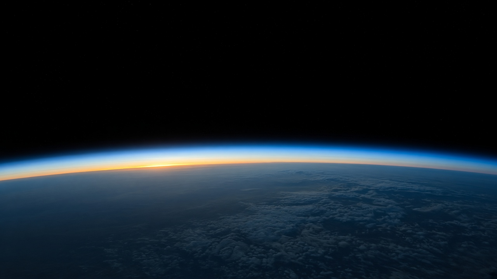
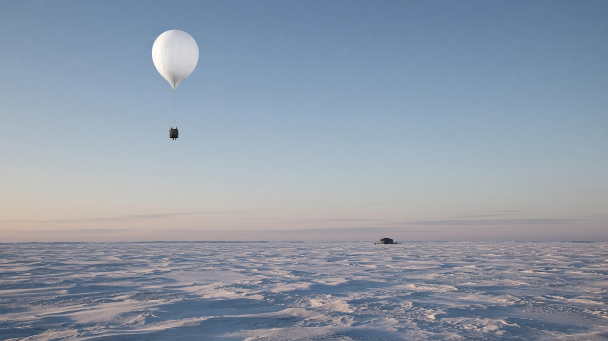
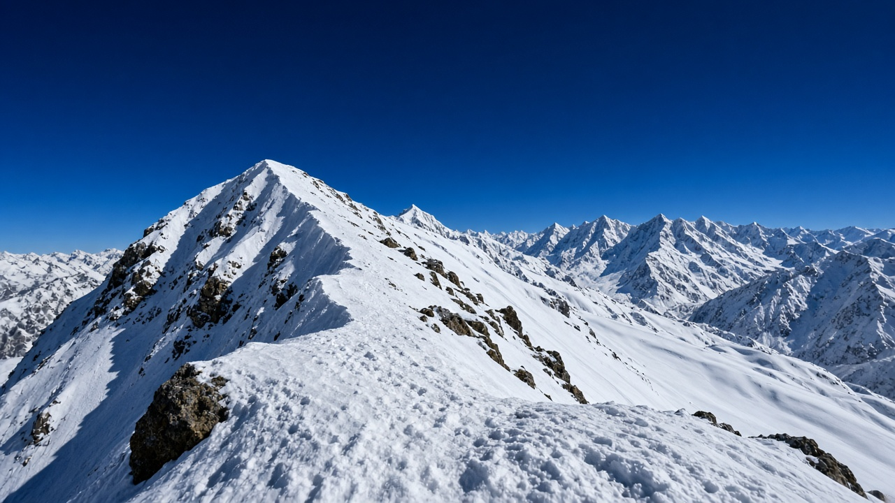

Stratospheric Ozone Layer and UV Protection
Published on August 20, 2026

The stratospheric ozone layer sits approximately fifteen to thirty-five kilometers above Earth's surface and absorbs most of the sun's biologically harmful ultraviolet radiation before it reaches the ground. Ozone molecules form when UV light splits oxygen molecules and the resulting oxygen atoms combine with intact oxygen molecules in a continuous photochemical cycle. This natural shield protects terrestrial and aquatic ecosystems from DNA damage, skin cancer, cataracts, and suppressed immune responses in humans and wildlife. Without adequate stratospheric ozone, UV-B and UV-A flux at the surface would increase dramatically, harming crops, phytoplankton, and the base of marine food webs.
Human release of chlorofluorocarbons, halons, and other ozone-depleting substances catalytically destroyed ozone in polar regions during the late twentieth century, creating the Antarctic ozone hole each austral spring. These compounds transport to the stratosphere where UV radiation releases chlorine and bromine atoms that repeatedly break apart ozone molecules in chain reactions. The Montreal Protocol, adopted in 1987, phased out production of the most damaging chemicals and stands as one of the most successful international environmental agreements. Atmospheric concentrations of key ozone-depleting substances have declined, and scientists observe gradual recovery of the ozone layer with full restoration expected over much of the globe by mid-century.
Continued vigilance remains essential because substitutes such as hydrochlorofluorocarbons and certain short-lived substances still pose risks, and climate change alters stratospheric temperature and circulation patterns that influence ozone distribution. Ground-based Dobson spectrophotometers, balloon-borne ozonesondes, and satellite instruments monitor total column ozone and vertical profiles worldwide. Public health programs emphasize UV index forecasts, protective clothing, and sunscreen use, especially at high altitudes and low latitudes where UV intensity is greatest. Protecting the ozone layer demonstrates that coordinated science, industry innovation, and policy can reverse global atmospheric damage while safeguarding human and ecological health for generations.

समताप मण्डल मा रहेको ओजोन तह पृथ्वी सतहबाट लगभग १५ देखि ३५ किलोमिटर माथि अवस्थित छ र सूर्यको जैविक रूपमा हानिकारक UV विकिरणको अधिकांश भाग अवशोषण गरी भुइँसम्म पुग्नबाट रोक्छ। ओजोन अणु UV प्रकाशले अक्सिजन अणु विभाजन भएपछि बन्छ र निरन्तर प्रकाश रासायनिक चक्रमा कायम रहन्छ। यो प्राकृतिक ढालले DNA क्षति, छाला क्यान्सर, मोतियाबिन्दु र प्रतिरक्षा प्रणाली कमजोर हुनबाट मानव र वन्यजन्तुलाई बचाउँछ। पर्याप्त समताप मण्डल ओजोन बिना सतहमा UV-B र UV-A तीव्रता नाटकीय रूपमा बढ्नेछ, जसले बाली, सूक्ष्मजीव र समुद्री खाद्य श्रृंखलाको आधारलाई हानि पुर्याउँछ।
मानवले छोडेका क्लोरोफ्लोरोकार्बन, हेलोन र अन्य ओजोन-क्षयकारी पदार्थले बीसौं शताब्दीमा ध्रुवीय क्षेत्रमा ओजोन नष्ट गरे, प्रत्येक दक्षिणी वसन्तमा अन्टार्कटिक ओजोन प्वाल सिर्जना गरे। यी यौगिक समताप मण्डल पुग्छन् र UV ले क्लोरिन र ब्रोमिन परमाणु मुक्त गर्छ जसले ओजोन श्रृंखला अभिक्रिया मा तोड्छ। १९८७ को मोन्ट्रियल सम्झौता ले सबैभन्दा हानिकारक रसायन उत्पादन रोक्यो र सफलतापूर्वक कार्यान्वयन भयो। ओजोन-क्षयकारी पदार्थको सान्द्रता घटेको छ र ओजोन तह बिस्तारै पुनर्स्थापना हुँदैछ।
हाइड्रोक्लोरोफ्लोरोकार्बन र केही छोटो-आयु पदार्थले अझै जोखिम राख्छन्, र जलवायु परिवर्तनले समताप मण्डल तापक्रम र परिसंचरण बदल्छ। भुइँमुखी डब्सन वर्ण विश्लेषक, बेलुन ओजोन मापक र उपग्रह ले ओजोन मापन गर्छ। जनस्वास्थ्य कार्यक्रमले UV सूचकांक पूर्वानुमान, सुरक्षात्मक लुगा र घामबाट बच्ने क्रीम प्रयोगमा जोड दिन्छ, विशेष गरी उच्च उचाइ र न्यून अक्षांशमा। ओजोन तह संरक्षणले समन्वित विज्ञान, उद्योग नवाचार र नीतिले वैश्विक वायुमण्डलीय क्षति उल्टाउन सक्छ भनी देखाउँछ।

समताप मंडल में ओजोन परत पृथ्वी सतह से लगभग 15 से 35 किलोमीटर ऊपर स्थित है और सूर्य के जैविक रूप से हानिकारक UV विकिरण का अधिकांश भाग अवशोषित कर भूमि तक पहुँचने से रोकती है। ओजोन अणु UV प्रकाश से ऑक्सीजन विभाजन के बाद बनते हैं और निरंतर प्रकाश रासायनिक चक्र में बने रहते हैं। यह प्राकृतिक ढाल DNA क्षति, त्वचा कैंसर, मोतियाबिंद और प्रतिरक्षा कमजोर होने से मनुष्य और वन्यजीवों की रक्षा करती है। पर्याप्त समताप मंडलीय ओजोन के बिना सतह पर UV-B और UV-A तीव्रता नाटकीय रूप से बढ़ जाएगा, जिससे फसल, सूक्ष्मजीव और समुद्री खाद्य श्रृंखला के आधार को हानि होगी।
मानव द्वारा छोड़े गए क्लोरोफ्लोरोकार्बन, हेलोन और अन्य ओजोन-क्षयकारी पदार्थों ने बीसवीं सदी में ध्रुवीय क्षेत्रों में ओजोन नष्ट किया, प्रत्येक दक्षिणी वसंत में अंटार्कटिक ओजोन छेद बनाया। ये यौगिक समताप मंडल तक पहुँचते हैं और UV क्लोरिन और ब्रोमिन परमाणु मुक्त करते हैं जो ओजोन को श्रृंखला अभिक्रिया में तोड़ते हैं। 1987 का मोन्ट्रियल सम्झौता सबसे हानिकारक रसायनों के उत्पादन को रोकने वाला सफल अंतर्राष्ट्रीय समझौता है। ओजोन-क्षयकारी पदार्थों की सांद्रता घटी है और ओजोन परत धीरे-धीरे पुनर्स्थापित हो रही है।
हाइड्रोक्लोरोफ्लोरोकार्बन और कुछ अल्पकालिक पदार्थ अभी भी जोखिम रखते हैं, और जलवायु परिवर्तन समताप मंडल तापमान और परिसंचरण बदलता है। भू-आधारित डब्सन वर्ण विश्लेषक, बेलुन ओजोन मापक और उपग्रह ओजोन मापते हैं। जन स्वास्थ्य कार्यक्रम UV सूचकांक पूर्वानुमान, सुरक्षात्मक वस्त्र और घामबाट बच्ने क्रीम उपयोग पर जोर देते हैं, विशेषकर उच्च ऊँचाई और निम्न अक्षांश में। ओजोन परत संरक्षण दिखाता है कि समन्वित विज्ञान, उद्योग नवाचार और नीति वैश्विक वायुमंडलीय क्षति को उलट सकती है।